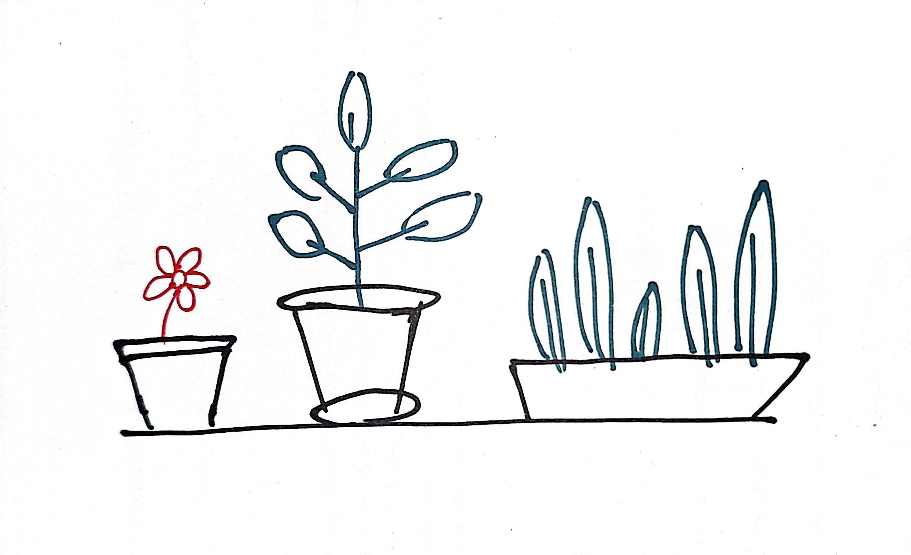

Last update: 2025-11-14

خونه هر کدوم از ما معماری متفاوتی داره. تعداد پنجره ها و به طبع اون نورگیر هر خونه متفاوته. از کسی که خونه اش فقط یه پنجره کوچیک داره و نورگیر کمی داره انتظار نمیره که بتونه ده ها گلدون رو زنده نگه داره. ولی به هر حال اگر همون نورگیر کم رو هم بی استفاده بذاره و هیچ گلی نگه نداره خیلی حیفه. از طرفی اگه تعداد گلدون هایی که برای خونه مون میگیریم بیشتر از نورگیر در دسترسمون باشه هم به چالش میخوریم. در این صورت نیازه اولویت بندی کنیم و تصمیم بگیریم این نور محدود قراره به کدوم ها برسه.
گل هایی که سال هاست داریم ریشه کلفت تری توی گلدونشون دواندند، سرما و گرمای بیشتری رو تحمل کردند و مقاوم تر شدند. در نتیجه نگهداری قدیمی تر ها هم زحمت کمتری میبره هم بیشتر میشه به بقاشون امیدوار بود، اما خب همچنان به نگهداری نیاز دارند و نمیشه به امان خدا رهاشون کرد.
گلدون ها نیاز به آبیاری مداوم دارند. حالا ممکنه یه گیاه لطیف باشه که هر روز نیاز به آب داشته باشه، یا یه گیاه سرسخت که با ماهی یبار آبیاری هم بتونه به حیاتش ادامه بده. اما نمیشه این آب رو حذف کرد و گرنه خشک میشه و محکوم به مرگ خواهد بود. نمیشه هیچ هزینه ای براش پرداخت نکنیم و بازم انتظار داشته باشیم دووم بیاره.
شیوه رسیدگی به هرکدوم منحصر به فرده. یکیشون ممکنه به چند تا پیس از اسپری نیاز داشته باشه و یکی دیگه به خالی کردن یکجای لیوان روی خاک. یکی ممکنه نیاز به خاک قلیایی داشته باشه و یکی اسیدی. اگه با مطالعه یا آزمایش کردن مدل های مختلف سیستم درست رو پیدا نکنیم و تا آخر یدونه اشتباهش رو به کار ببندیم، علیرغم همه زحمت هامون بازم پژمرده میشه.
اگه نخوایم وقت و انرژی صرف کنیم میتونیم فقط گیاهان سرسخت رو نگه داریم ولی اینطوری از زیبایی گونه های آسیب پذیرتر محروم میمونیم. حتی میتونیم خودمون رو کلا خلاص کنیم و هیچ گیاهی نگه نداریم، ولی خب اونطوری خونه مون دیگه روح خودش رو از دست میده.
نهایتا آخرین چیزی که به فکرم میرسه هم صبور بودنه. زمان نیازه. زمان نیازه تا گیاه پربارتر بشه، تعداد برگاش زیاد بشه، ریشه اش محکم تر بشه. این صبر کردن و دیدن رشد در طول زمان، تماشای نتیجه نهایی رو هم لذت بخش تر میکنه.
خانواده، دوستان، معشوق🌱